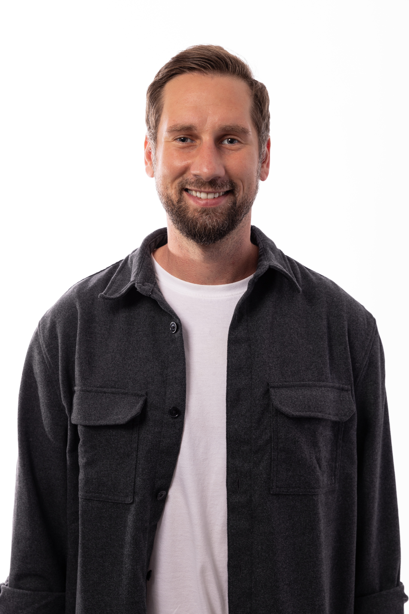

CONDA
Inside.
Gründer:innen, Investor:innen und die Geschichten hinter den Projekten — ungefiltert, persönlich, auf den Punkt.
Hören und Sehen
CONDA Inside erscheint als Audio- und Videopodcast — gleicher Inhalt, zwei Formate. Ob du zuhörst oder zuschaust, bleibt dir überlassen.
Video · YouTube
Audio · Spotify
Warum CONDA Inside?
Niederschwellig zu Investmentwissen
Emissionsinformationen müssen nicht trocken sein. CONDA Inside bringt die Geschichten hinter Crowdinvesting-Projekten in ein Format, das sich nebenher konsumieren lässt — beim Pendeln, beim Training, beim Frühstück. Kein Pitch-Deck, das man sich zu Gemüte führen muss, sondern ein echtes Gespräch.
Gesichter hinter den Unternehmen
Als Videopodcast gibt CONDA Inside etwas, das kein Prospekt kann: Man sieht, wer hinter dem Projekt steht. Mimik, Körpersprache, Begeisterung — das schafft Vertrauen auf einer Ebene, die Zahlen allein nicht erreichen.
30 bis 40 Minuten wie ein echtes Gespräch
Jede Folge ist ein offenes Gespräch — keine PR-Hochglanzmomente, keine vorbereiteten Antworten. Investor:innen bekommen die Zeit, Gründer:innen wirklich kennenzulernen, so als würden sie selbst am Tisch sitzen.
Die Gesichter hinter dem Mikrofon

Daniel co-gründete CONDA Capital Market 2012 und ist seither einer der bekanntesten Gesichter des österreichischen Crowdinvestings. Als serieller Unternehmer und Investor bringt er ins Gespräch, was in jedem Pitch-Deck fehlt: echte Neugier für Menschen und ihre Ideen.
Nico verantwortet bei CONDA Capital Market das Marketing und die Produktion von CONDA Inside. Er sorgt dafür, dass aus jedem Gespräch ein Erlebnis wird — vom ersten Schnitt bis zur letzten Story.
Überall zum Hören & Ansehen
Spotify
Alle Folgen als Audio-Podcast. Ideal für unterwegs — abonnieren und keine Episode verpassen.
Auf Spotify öffnen →
Apple Podcasts
Für iPhone & Mac — direkt in der Podcasts-App öffnen und abonnieren.
In Apple Podcasts öffnen →YouTube
Der Videopodcast — Gesichter, Gesten, Atmosphäre. Die volle Erfahrung für alle, die mehr als nur Ton wollen.
Auf YouTube ansehen →